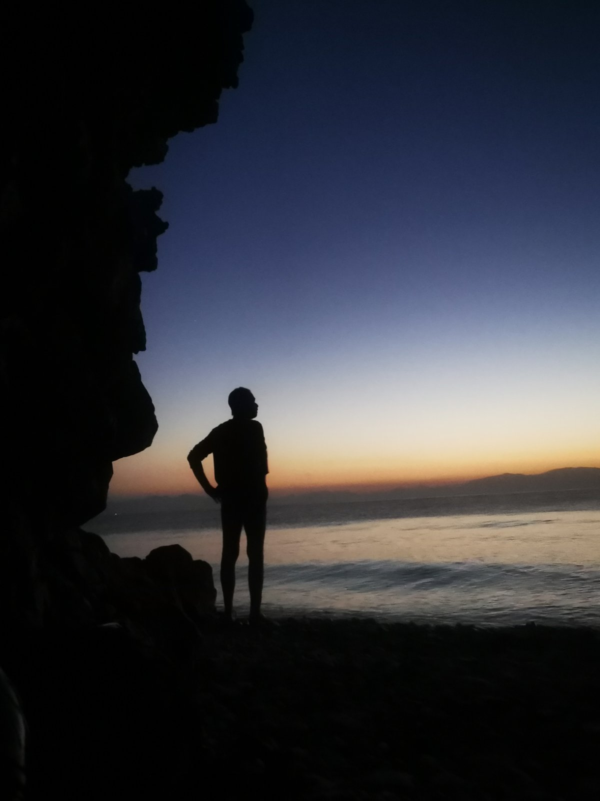
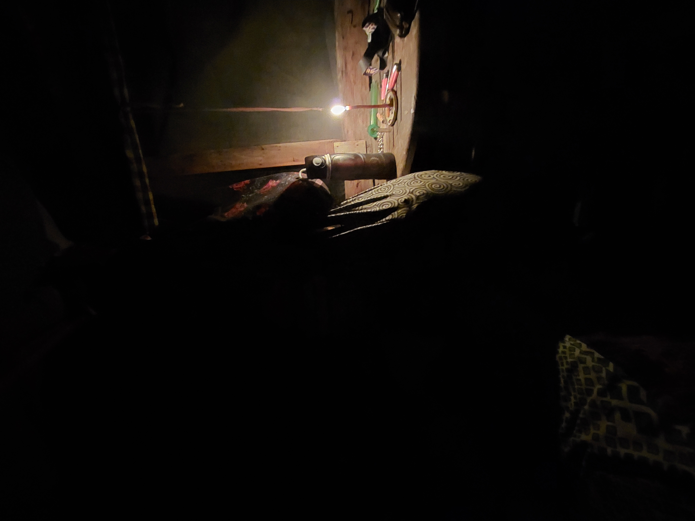
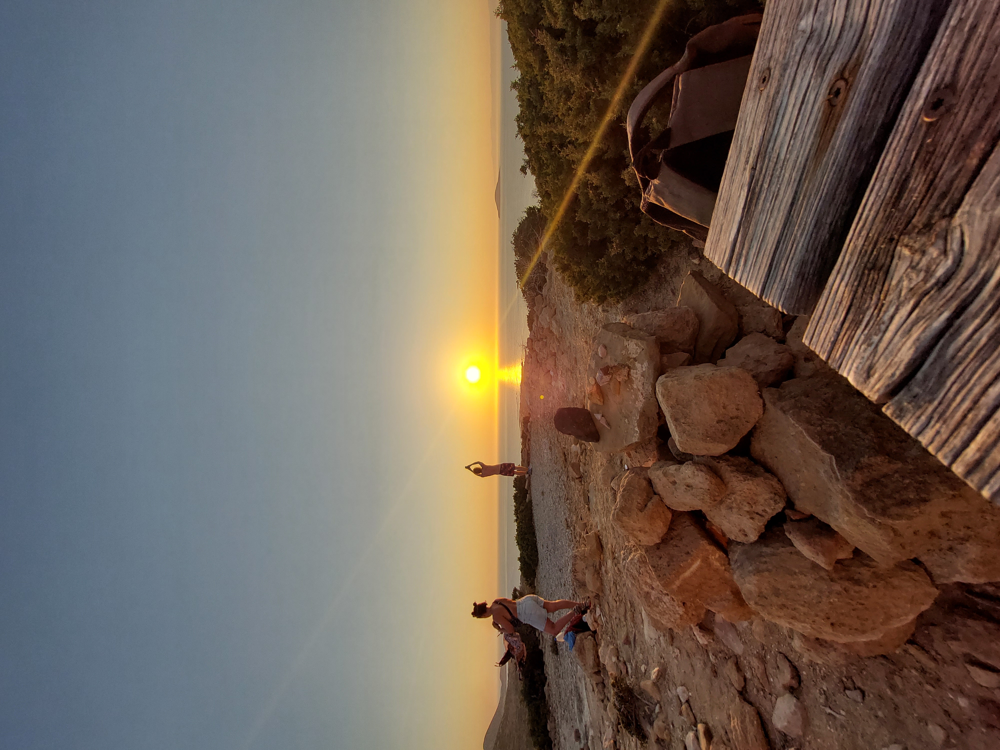

22 Απριλίου 2026: επιχείρηση κατεδάφισης χωρίς νομική βάση
Στη Γαύδο, ΜΑΤ πλήρους εξάρτυσης με το συνεργείο της Βασιλάκης Μιχαήλ και παρουσία εισαγγελέα κατεδάφισαν αυτοσχέδιες καλύβες. Οι κάτοικοι απειλήθηκαν με συλλήψεις και δεν τους δόθηκε καμία επιλογή να αντιδράσουν. Οι κατασκευές ήταν από ξύλα και υλικά που ξεβράζει η θάλασσα, μέχρι 5τμ, με μηδενικό περιβαλλοντικό αποτύπωμα.
Η Αποκεντρωμένη Διοίκηση Κρήτης και ο Δήμος Γαύδου έκαναν λόγο για «περιβαλλοντική καταστροφή» – όμως η απόφαση δεν τέθηκε ποτέ σε δημόσια διαβούλευση και δεν υπήρξε σχέδιο μετεγκατάστασης. Το συνεργείο άφησε πίσω αμάζευτα σκουπίδια, προκαλώντας πραγματική ρύπανση.
Η δήμαρχος Λίλιαν Στεφανάκη, που αρχικά δήλωνε αναρμόδια, εμφανίστηκε με τον αδερφό της για να εποπτεύσει την κατεδάφιση. Ο αδερφός της απείλησε ότι «θα θάψει όποιον αντιστέκεται κάτω από τη γη» και χειροδίκησε σε πολίτη που ζητούσε εξηγήσεις.
- ❌ Καμία επίδοση εγγράφου κατεδάφισης σε Λαυρακά και Αη Γιάννη.
- 👊 Απειλές & χειροδικία από τον αδερφό της δημάρχου.
- 🗑️ Το συνεργείο εγκατέλειψε σκουπίδια – ειρωνεία για την «προστασία της φύσης».
- 🚿 2021: η ίδια δήμαρχος είχε εγκαταστήσει ντουζιέρες με κερματοδέκτες στην παραλία.
- 📜 Ταυτόχρονο νομοσχέδιο Υπ. Περιβάλλοντος: νομιμοποίηση τουριστικών αυθαιρέτων σε δάση & Natura.
Νομιμοποιούν αν χτίζεις για τουρισμό – κατεδαφίζουν αν απλώς ζεις εκτός αγοράς.
Η κοινότητα Λαυρακά κάνει ό,τι δεν κάνει ο Δήμος
Οικολογική γνώση & δράση
Οι κάτοικοι γνωρίζουν πώς αναπτύσσονται οι κέδροι, συλλέγουν σκουπίδια ναυλώνοντας βάρκες κάθε καλοκαίρι, έχουν αγοράσει πυροσβεστήρες και οργανώνουν πυρασφάλεια. «Κλαίμε με το σπάσιμο ενός μικρού κλαδιού».
Υγεία: γιατρός απομακρύνθηκε
Ο μοναδικός γιατρός του νησιού απομακρύνθηκε επειδή κατήγγειλε μόλυνση νερού. Το καλοκαίρι του 2024 η Γαύδος περιήλθε σε τοπική επιδημία γαστρεντερίτιδας. Η κοινότητα προσέφερε πρώτες βοήθειες, ο δήμος απών.
Εγκατάλειψη – προπομπός εκμετάλλευσης
Χειμώνας χωρίς υγειονομική κάλυψη, ακανόνιστες ακτοπλοϊκές συνδέσεις. Η εγκατάλειψη σχεδιάζεται για να παραδοθούν οι τόποι σε επενδύσεις. Το πατριωτικό αφήγημα για τα ακριτικά νησιά καταρρέει.
Δεν θα γίνουμε τουριστικό θέρετρο
«Μέρη σαν τη Γαύδο έγιναν καταφύγια. Τόποι όπου αλλάζει ο ρυθμός, η σχέση με τον άλλον, η σχέση με τη γη. Αυτό δεν συγχωρείται από την αγορά.»
- ✓ Καταδικάζουμε τις κατεδαφίσεις ως πολιτική επιλογή, όχι νομική αναγκαιότητα.
- ✓ Καταδικάζουμε το νομοσχέδιο που νομιμοποιεί τουριστικές αυθαιρεσίες σε δασικές εκτάσεις Natura.
- ✓ Στεκόμαστε στο πλευρό της κοινότητας του Λαυρακά και όσων αντιστέκονται.
- ✓ Η Γαύδος δε θα γίνει θέρετρο για πλούσιους, ούτε βάση εξορύξεων ή στρατιωτικών επιχειρήσεων.
Επόμενα βήματα
Μαΐ
Αθήνα – Στέκη Μεταναστών, 19:00
Συντονισμός αποστολής στη Γαύδο
Μαΐ
Κατάληψη Ζιζάνια, 20:30
Ιουν
Λαυρακάς & Σαρακήνικο – φυσική παρουσία
Ιουν
Αθήνα – χώρος ανακοινώνεται
Μείνετε ενημερωμένοι για νέες καταγγελίες, καλέσματα και πολιτικές εξελίξεις.
Τι μπορείς να κάνεις
🚢 Φυσική παρουσία στο νησί
Η ορατότητα αποτρέπει νέες βίαιες επιχειρήσεις. Καλούμε όσους/ες μπορούν να ταξιδέψουν στη Γαύδο – συλλογικές μετακινήσεις μέσω της Πρωτοβουλίας.
Πληροφορίες μετάβασης →📢 Διάδοση – σπάμε τη σιωπή
Η εκκωφαντική σιωπή ντόπιων που εξαρτώνται από ρουσφέτια και τοπική εξουσία τροφοδοτεί την αυθαιρεσία. Μοιράσου το κείμενο, τις μαρτυρίες, τις φωτογραφίες.
Υλικό για διαμοιρασμό →🤝 Γίνε μέλος της Πρωτοβουλίας
Καλούμε κατοίκους Αθήνας, ντόπιους Γαύδου, νομικές και ιατρικές ομάδες. Συντονισμός, αλληλεγγύη, άμεση υποστήριξη στην κοινότητα.
Επικοινωνία →📧 Για συμμετοχή, εθελοντισμό ή απορίες:
protovoulliaathinasgavdo@proton.com
Φωτογραφίες από τη Γαύδο






※ Οι φωτογραφίες θα προστεθούν σύντομα. Ονόματα αρχείων: pic1.jpg έως pic6.jpg.